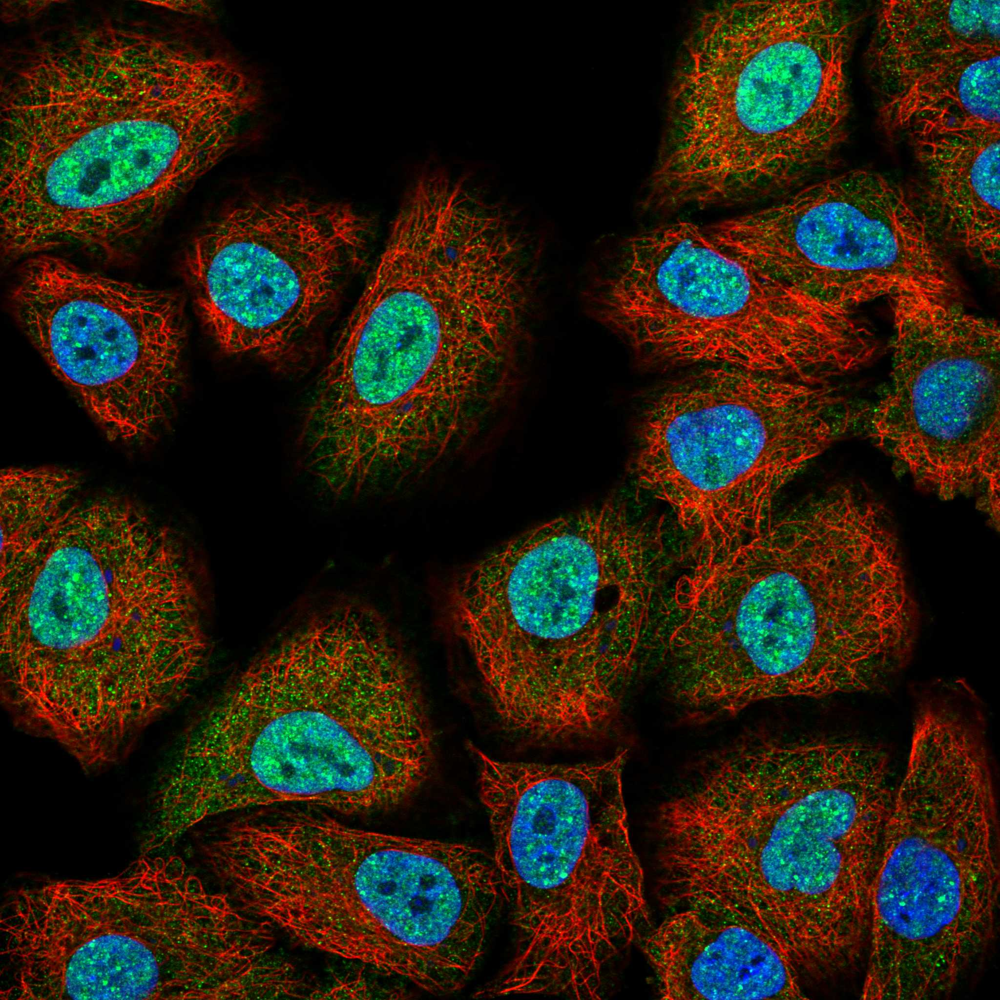
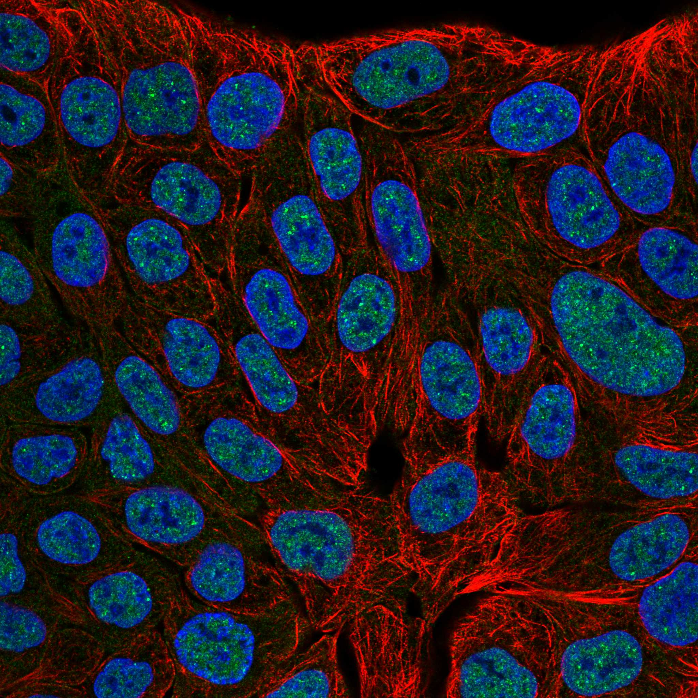
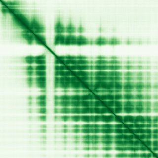

type: protein-evaluation gene: "EXOC6B" date: 2026-06-03 tags: [protein-scout, nuclear-protein, evaluation] status: scored ---
EXOC6B 核蛋白评估报告 (Full Re-evaluation)
1. 基本信息
| 项目 | 内容 |
|---|---|
| 基因名 / 别名 | EXOC6B / KIAA0919, SEC15B, SEC15L2 |
| 蛋白名称 | Exocyst complex component 6B |
| 蛋白大小 | 811 aa / 94.2 kDa |
| UniProt ID | Q9Y2D4 |
| 评估日期 | 2026-06-03 |
IF 图像:  
2. 评分总览
| 维度 | 得分 | 满分 | 加权后 | 关键证据摘要 |
|---|---|---|---|---|
| 核定位特异性 | 4/10 | ×4 | 16 | HPA: Nucleoplasm, Nuclear bodies; 额外: Cytosol; UniProt: 无注释 |
| 蛋白大小 | 8/10 | ×1 | 8 | 811 aa / 94.2 kDa |
| 研究新颖性 | 8/10 | ×5 | 40 | PubMed strict=24 篇 (≤40→8) |
| 三维结构 | 7/10 | ×3 | 21 | AlphaFold v6 pLDDT=79.9; PDB: 无 |
| 调控结构域 | 7/10 | ×2 | 14 | InterPro: IPR007225, IPR046361, IPR042045, IPR048359, IPR042 |
| PPI 网络 | 3/10 | ×3 | 9 | STRING 15 partners; IntAct 15 interactions |
| 互证加分 | — | max +3 | 1.5 | PDB+AF+STRING+IntAct cross-validation |
| 原始总分 | 109.5/180 | |||
| 归一化总分 | 60.8/100 |
3. 详细分析
3.1 核定位证据
| 来源 | 定位 | 可信度 |
|---|---|---|
| Protein Atlas (IF) | Nucleoplasm, Nuclear bodies; 额外: Cytosol | Approved |
| UniProt | 无注释 | Swiss-Prot/TrEMBL |
IF 图像获取: IF图像已下载并嵌入 (2张)
GO Cellular Component:
- exocyst (GO:0000145)
- plasma membrane (GO:0005886)
结论: 核定位信号较弱，多个数据源显示混合定位或非核偏好。
3.2 蛋白大小评估
评价: 大小基本合适，可用于常规实验。
3.3 研究现状
| 指标 | 数值 |
|---|---|
| PubMed strict count | 24 |
| PubMed broad count | 43 |
| 别名(未计入scoring) | Aliases observed but not used for scoring: KIAA0919, SEC15B, SEC15L2 |
关键文献: 1. LIF Promotes Sec15b-Mediated STAT3 Exosome Secretion to Maintain Stem Cell Pluripotency in Mouse Embryonic Development.. *Advanced science (Weinheim, Baden-Wurttemberg, Germany)*. PMID: 39475099 2. A Multibreed Genome-Wide Association Study for Cattle Leukocyte Telomere Length.. *Genes*. PMID: 37628647 3. Biallelic loss-of-function variants in EXOC6B are associated with impaired primary ciliogenesis and cause spondylo-epi-metaphyseal dysplasia with joint laxity type 3.. *Human mutation*. PMID: 36150098 4. Genetic and allelic heterogeneity in 248 Indians with skeletal dysplasia.. *European journal of human genetics : EJHG*. PMID: 39706863 5. Genetic regulation of fatty acid content in adipose tissue.. *American journal of human genetics*. PMID: 41534528
评价: 非常新颖，仅有少数基础研究。
3.4 三维结构分析
| 指标 | 数值 |
|---|---|
| AlphaFold 版本 | v6 |
| AlphaFold 平均 pLDDT | 79.9 |
| 高置信度残基 (pLDDT>90) 占比 | 26.3% |
| 置信残基 (pLDDT 70-90) 占比 | 55.9% |
| 中等置信 (pLDDT 50-70) 占比 | 10.4% |
| 低置信 (pLDDT<50) 占比 | 7.5% |
| 有序区域 (pLDDT>70) 占比 | 82.2% |
| 可用 PDB 条目 | 无 |
PAE (Predicted Aligned Error): 
评价: AlphaFold 中等质量（pLDDT=79.9，有序区 82.2%），结构基本可用。
3.5 结构域分析
| 来源 | 结构域 |
|---|---|
| InterPro/Pfam | InterPro: IPR007225, IPR046361, IPR042045, IPR048359, IPR042044; Pfam: PF20651, PF04091 |
染色质调控潜力分析: 存在已知结构域注释，可作为功能研究的结构基础。
3.6 PPI 网络
STRING 预测互作 (combined score >0.4):
| Partner | Combined Score | Experimental | 功能类别 |
|---|---|---|---|
| EXOC5 | 0.997 | 0.975 | — |
| EXOC8 | 0.995 | 0.977 | — |
| EXOC7 | 0.994 | 0.976 | — |
| EXOC4 | 0.993 | 0.942 | — |
| EXOC1 | 0.991 | 0.953 | — |
| EXOC3 | 0.989 | 0.907 | — |
| EXOC2 | 0.987 | 0.937 | — |
| EXOC1L | 0.866 | 0.603 | — |
| EXOC3L1 | 0.861 | 0.615 | — |
| EXOC6 | 0.827 | 0.626 | — |
实验验证互作 (IntAct):
| Partner | 方法 | PMID | |
|---|---|---|---|
| MTERF1 | psi-mi:"MI:0034"(display technology) | pubmed:20195357 | imex:IM-20475 |
| PTK2B | psi-mi:"MI:0399"(two hybrid fragment pooling appro | pubmed:31413325 | imex:IM-26801 |
| IL1R2 | psi-mi:"MI:0007"(anti tag coimmunoprecipitation) | pubmed:28514442 | doi:10.1038/na |
| SHTN1 | psi-mi:"MI:1356"(validated two hybrid) | pubmed:32296183 | imex:IM-25472 |
| EXOC7 | psi-mi:"MI:2222"(inference by socio-affinity scori | pubmed:unassigned1312 | |
| EXOC1 | psi-mi:"MI:2222"(inference by socio-affinity scori | pubmed:unassigned1312 | |
| EXOC6 | psi-mi:"MI:2222"(inference by socio-affinity scori | pubmed:unassigned1312 | |
| EXOC4 | psi-mi:"MI:2222"(inference by socio-affinity scori | pubmed:unassigned1312 | |
| EXOC2 | psi-mi:"MI:2222"(inference by socio-affinity scori | pubmed:unassigned1312 | |
| EXOC8 | psi-mi:"MI:2222"(inference by socio-affinity scori | pubmed:unassigned1312 |
PPI 互证分析:
- STRING + IntAct 均有数据
- STRING partners: 15，IntAct interactions: 15
- 调控相关比例: 0 / 15 = 0%
评价: STRING 15 个预测互作，IntAct 15 个实验互作。调控相关配体占比 0%。
3.7 多库互证
| 维度 | 来源 | 结果 | 是否一致 |
|---|---|---|---|
| 三维结构 | AlphaFold pLDDT=79.9 + PDB: 无 | pLDDT=79.9, v6 | 仅预测 |
| 定位 | UniProt + HPA | 无注释 / Nucleoplasm, Nuclear bodies; 额外: Cytosol | 一致 |
| PPI | STRING + IntAct | 15 + 15 interactions | 数据充分 |
互证加分明细:
- PDB + AlphaFold 双源验证: +0
- 多库定位一致 (2源): +0.5
- STRING + IntAct 双源验证: +0.5
- 结构域 + AlphaFold 质量: +0.5
- PDB 多条目覆盖: +0
总分: +1.5 / max +3
4. 总体评价
推荐等级: ⭐⭐⭐
核心优势: 1. EXOC6B — Exocyst complex component 6B，非常新颖，仅有少数基础研究。 2. 蛋白大小811 aa，大小基本合适，可用于常规实验。
风险/不确定性: 1. PubMed 24 篇，已有一定研究基础 2. 结构数据质量可接受
下一步建议:
- [ ] 查阅最新关键文献补充研究背景
- [ ] 获取 Protein Atlas IF 图像确认亚细胞定位
- [ ] 设计体外实验验证核定位及潜在调控功能
5. 数据来源
- UniProt: https://www.uniprot.org/uniprotkb/Q9Y2D4
- Protein Atlas: https://www.proteinatlas.org/ENSG00000144036-EXOC6B/subcellular
- PubMed: https://pubmed.ncbi.nlm.nih.gov/?term=EXOC6B
- AlphaFold: https://alphafold.ebi.ac.uk/entry/Q9Y2D4
- STRING: https://string-db.org/network/9606.ENSP00000
- Data fetched live: 2026-06-03
<!-- DOMAIN_HUMANPPI_REPAIR_START -->
Domain/SMART 与 humanPPI 补充（2026-06-07）
SMART / UniProt domain
| Source | Data |
|---|---|
| UniProt | Q9Y2D4 |
| SMART | 未在 UniProt xref 中检出 SMART 条目 |
| UniProt Domain [FT] | 未检出显式 UniProt Domain feature |
| InterPro | IPR007225;IPR046361;IPR042045;IPR048359;IPR042044; |
| Pfam | PF20651;PF04091; |
humanPPI / HPA Interaction
Source: https://www.proteinatlas.org/ENSG00000144036-EXOC6B/interaction
| Partner | Datasets | AF3/HPA structure |
|---|---|---|
| EXOC1 | Intact, Biogrid | true |
| EXOC2 | Intact, Biogrid | true |
| EXOC3 | Intact, Biogrid | true |
| EXOC4 | Intact, Biogrid | true |
| EXOC5 | Intact, Biogrid | true |
| EXOC6 | Intact, Biogrid | true |
| EXOC7 | Intact, Biogrid | true |
| EXOC8 | Intact, Biogrid, Bioplex | true |
<!-- DOMAIN_HUMANPPI_REPAIR_END -->